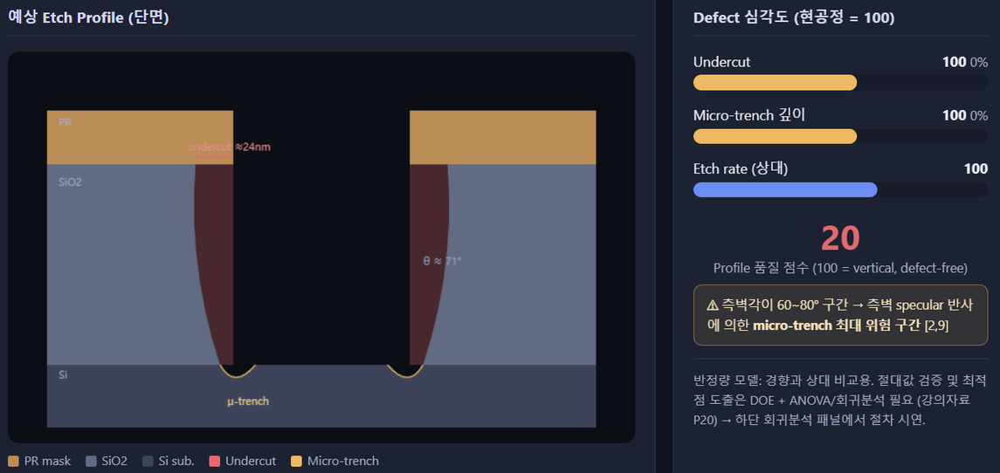
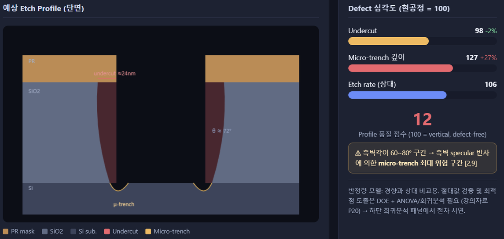

Etch Profile 이상 원인분석
DOE로 Undercut 87%·Micro-trench 95% 저감
SiO₂ Contact Via 식각 공정에서 발생한 Undercut·Micro-trenching Profile 이상을 분석했습니다. Defect Profile을 직접 관찰·분류해 원인 가설을 세웠고, Gas·Pressure·Bias Power 3인자 27-run Full Factorial DOE와 ANOVA·회귀분석으로 가설을 정량 검증해 최적 Recipe를 도출했습니다.
개요
CCP-RIE 장비를 이용한 SiO₂ Contact Via 식각 공정에서, SiO₂ Dry Etch 후 Resist Strip 전 단면 관찰 시 Sidewall Profile 이상이 발견된 상황을 다뤘습니다. 고정 인자 (Process Temp 30℃, Plasma Source Power 50W)를 제외한 3개 변경 가능 인자(Gas, Pressure, Bias Power)를 대상으로 DOE 기법을 적용해 원인을 정량적으로 규명하는 과제였습니다.
| Feature | 현재값 | 비고 |
|---|---|---|
| 사용 Gas | CF₄ | CFx Passivation 형성량 부족 가능 |
| Pressure | 100 mTorr | Ion Mean Free Path 짧음 |
| Bias Power | 50 W | Ion Energy 상대적으로 높음 |
| Process Temp | 30 ℃ | 변경 대상 아님 |
| Plasma Source Power | 50 W | 변경 대상 아님 |
| Etch time | EPD(Endpoint Detection) 사용, Overetch 10% 적용 | 현 공정 적용조건 |
문제 현상분석
SiO₂ Dry Etching 완료 후 Resist Strip 전 단면을 직접 관찰했습니다. 정상 Profile은 SiO₂ Sidewall이 수직에 가깝고 Bottom이 균일하게 형성된 Anisotropic Profile인데, 관찰된 이미지에서는 표시된 영역에서 Sidewall의 수직 형상이 유지되지 않고 측벽이 국부적으로 깎이거나 휘어진 Profile 이상이 관찰되었습니다. Sidewall과 Bottom이 만나는 영역의 형상이 둥글게 변형되고, 정상 Profile 대비 측면 방향 식각이 증가한 것으로 판단했습니다.
이 관찰 결과를 세 가지 Defect 특징으로 분류했습니다.
- Undercut(Lateral recess) — 상부 Mask 하부 측벽이 측방향으로 후퇴
- Positive taper — 바닥 중앙보다 측벽-바닥 접점의 가장자리 식각 깊이가 더 깊음
- Micro-trenching(Local over-etch) — 측벽이 아래로 갈수록 폭이 다소 좁아지는 경사 형상, 국부적인 Bottom Corner 과식각

추정 원인
상부 Undercut의 3가지 추정 원인
- ① F-rich Chemistry — CF₄는 CHF₃ 계열보다 상대적으로 F/C 비가 높은 가스로 F radical에 의한 SiO₂ 화학적 식각 영향이 큽니다. F radical은 중성종이므로 전기장에 의해 수직 방향으로만 가속되지 않고 여러 방향으로 확산됩니다
- ② 측벽 Passivation 부족 — CFₓ 계열 측벽 보호막이 충분하지 않으면 F radical이 Mask 하부까지 도달, 측벽의 횡방향 식각이 억제되지 않아 Undercut이 형성됩니다
- ③ 공정조건의 보조 영향 — Pressure 100mTorr에서 이온 산란 증가로 수직 방향성이 저하될 수 있고, Overetch 10%가 이미 발생한 Lateral Recess를 추가로 확대했을 가능성이 있습니다
하부 Micro-trench의 3가지 추정 원인
- ① Bias에 의한 이온 가속 — Bias Power 50W에 의해 양이온이 Wafer 방향으로 가속되어 바닥 식각에 필요한 물리적 에너지를 전달합니다
- ② 측벽 반사 — Undercut으로 형성된 경사진 측벽에 일부 이온이 충돌하고, 측벽에서 반사된 이온이 Bottom Center가 아닌 Corner로 집중됩니다
- ③ Corner Etch 증가 — Bottom Corner의 이온 에너지·Flux가 중앙보다 증가해 모서리의 Ion-assisted Etch가 커지며 Micro-trenching이 형성됩니다
인자 변화에 따른 영향 및 Trade-off
| 인자 변화 | Undercut 영향 | Micro-trench 영향 | Trade-off |
|---|---|---|---|
| CHF₃ 비율 증가 | Passivation 증가 → Undercut 감소 | 반사 ion 영향 감소 → Micro-trench 감소 | 과도하면 polymer 증착, etch rate 저하, etch stop 가능 |
| Pressure 감소 | 수직 입사성 향상 → Undercut 감소 | 저압에서 specular reflection 영향 커져 Micro-trench 증가 가능 | 수직성은 좋아지지만 반사 ion 집중이 심해질 수 있음 |
| Pressure 증가 | 방향성 저하 → Undercut 증가 가능 | 반사 ion 국부 집중 완화 → Micro-trench 감소 가능 | 과도하면 profile bowing 및 수직성 저하 |
| Bias Power 증가 | 수직 ion-assisted etch 강화 → Undercut 감소 | corner etch 강화 → Micro-trench 증가 | plasma damage, PR selectivity 저하, over-etch 위험 |
| Bias Power 감소 | 화학적 측방향 식각 비중 증가 → Undercut 증가 가능 | 반사 ion 에너지 감소 → Micro-trench 감소 | 너무 낮으면 etch rate 저하와 비수직 profile 가능 |
이 추정 원인을 검증하기 위해 Gas·Pressure·Bias Power를 DOE 인자로 선정하고, Undercut 길이와 Micro-trench 깊이를 각각 반응변수로 설정했습니다.
사전 시뮬레이션
실제 DOE 실험 전, 공정조건 변화에 따른 Undercut·Micro-trench 발생 경향을 예측해 결함 저감을 위한 조건 비교와 DOE 분석 기반을 마련하기 위한 사전 공정분석 도구를 구현했습니다. Gas Chemistry(CF₄·CHF₃·CF₄/CHF₃ 혼합), Pressure(10~150mTorr), Bias Power(10~150W)를 입력받아 F/C비·Passivation·IADF(입사각 분포)·Ion Flux로 구성된 Plasma/Ion 거동 모델을 거쳐 예상 Etch Profile 단면·측벽각(θ), Undercut 크기 및 상대 심각도, Micro-trench 깊이·폭, 상대 Etch Rate·Profile 품질점수를 출력하는 흐름입니다. 문헌에서 확인된 물리적 경향을 수식화한 반정량 모델로, 절댓값 검증과 최적점 도출은 이후 DOE·ANOVA·회귀분석으로 진행했습니다.
DOE·ANOVA·회귀분석
선정한 3인자에 대해 3수준 Full Factorial DOE(27 Runs)를 설계했습니다. 각 인자의 수준과 설정 이유는 다음과 같습니다.
| 인자 | 1수준 | 2수준 | 3수준 | 설정 이유 |
|---|---|---|---|---|
| A: Gas(조성비) | CF₄ 50sccm | CHF₃ 50% | CHF₃ 50sccm | F radical에 의한 등방성 식각(Undercut)과 CHF₃ 폴리머의 측벽 Passivation 형성 간 최적 밸런스를 찾기 위해, 보호막 없는 순수 CF₄부터 보호막이 극대화된 순수 CHF₃까지 가스 혼합비를 조정 |
| B: Pressure | 10 mTorr (고직진성) | 30 mTorr | 100 mTorr (산란심화) | 입자 간 산란을 줄여 이온의 수직 직진성을 향상시키기 위해, 산란 불량이 심한 100mTorr에서 점진적으로 진공도를 높여가며 언더컷 방지에 유리한 저압 환경을 도출 |
| C: Bias Power | 30 W (반사완화) | 50 W | 70 W (충격극대화) | 이온의 물리적 충격 에너지를 제어하기 위해, 데미지가 적은 30W와 이온 정반사로 Micro-trench가 유발되는 70W를 양 끝단으로 설정해 결함 없이 식각되는 최적의 스윗스팟을 검증 |
27-run 시뮬레이션 결과, Gas 3수준(CHF₃ High)·Pressure 1수준(10mTorr)·Bias 1수준(30W) 조합(Run 19)이 Profile 품질점수 93.7점으로 최고, Gas 1수준(CF₄)· Pressure 3수준(100mTorr)·Bias 3수준(70W) 조합(Run 9)이 10.9점으로 최저를 기록했습니다. ANOVA 결과는 다음과 같습니다.
| 요인 | 기여율 | 유의성 |
|---|---|---|
| A: Gas(조성비) | 73.70% | *** |
| B: Pressure | 18.70% | *** |
| C: Bias Power | 1.20% | *** |
| Lack of Fit | 5.90% | *** |
| Pure Error | 0.50% | - |
세 인자 모두 통계적으로 유의(p<0.001)했고, Gas 조성비가 73.7%로 압도적으로
지배적인 인자였습니다. 회귀식은 Y = 절편 + 25.459·Gas* − 12.827·Pressure*
− 3.276·Bias* 형태로 도출됐습니다(A: CHF₃ 유량(sccm), B: 챔버압력(mTorr),
C: 바이어스 파워(W)). Gas 계수가 양수(+25.459)로 가장 크게 나타나 CF₄/CHF₃
혼합으로 유효 F/C 비율을 낮춰 안정적인 CFₓ 보호막을 형성하는 것이 Undercut 억제에
절대적임을, Pressure 계수(−12.827, 음수)는 압력 상승에 따른 Mean Free Path
감소·IADF 산란 심화가 Profile을 붕괴시킴을, Bias 계수(−3.276, 음수)는 강한 Bias가
Micro-trench를 유발하는 정반사를 증폭시키므로 하향 제어가 필요함을 물리적으로
뒷받침했습니다.
최적 Recipe
Gas(유량 상향) — CHF₃ 50sccm(High). CHF₃는 CF₄보다 F/C Ratio가 낮아 플라즈마 내에서 CFₓ 계열 고분자막을 더 많이 형성합니다. 이 고분자막이 측벽을 보호해 수평 방향의 화학적 식각을 억제하므로 Undercut을 감소시킬 수 있어, 측벽 보호 효과를 극대화하기 위해 CHF₃ 유량을 High 수준으로 설정했습니다.
Pressure(압력 하향) — 10mTorr(Low). 압력을 낮추면 플라즈마 내 평균 자유행로가 증가해 이온 간 충돌과 산란이 감소합니다. 그 결과 이온이 웨이퍼 표면에 보다 수직으로 입사해 식각 방향성이 향상되고, 측벽 방향의 불필요한 식각과 Undercut을 억제할 수 있어 Pressure를 Low 수준인 10mTorr로 설정했습니다.
Bias Power(해석 및 최종 조정) — 회귀모델의 수치적 최적점은 Bias 30W였으나, Coburn과 Winters(Plasma Chemistry of Fluorocarbons as Related to Plasma Etching and Plasma Polymerization)에 따르면 이 장비 구성에서 30W 미만/근접 구간은 이온 에너지 부족으로 Passivation 과잉 및 Etch Stop 위험이 보고된 바 있습니다. CFₓ 계열 플라즈마에서는 이온 충격 에너지가 표면에 흡착된 Fluorocarbon 반응종을 물리적으로 Desorption시키기에 불충분할 경우 Etching이 아닌 Polymerization이 우세한 영역으로 공정이 전이되는데, Bias가 낮아지는 구간이 이러한 저이온에너지 조건에 해당해 측벽·바닥면에 형성된 CFₓ 보호막이 충분히 제거되지 못하고 국부적 Etch Stop이 발생할 위험이 있다고 판단했습니다. 이에 수치적 최적점보다 공정 안정성을 우선해 Bias Power를 30W → 50W로 수정해 제안했습니다.


향후 관리방안
- Recipe 표준화 — DOE와 회귀분석으로 도출한 최적 Recipe를 표준 조건으로 등록하고, Recipe Lock과 변경 승인 절차를 적용해 임의의 조건 변경을 방지
- FDC 실시간 모니터링 — Gas Flow, Pressure, Bias Power를 실시간 감시하고 관리 기준을 벗어나면 즉시 알람과 Lot Hold를 수행해 공정 이상을 조기 차단
- SPC 관리도 적용 — Etch Rate, Undercut, Micro-trenching 등 주요 공정 데이터를 관리도 기반으로 지속 분석해 이상 추세를 조기 발견하고 선제 대응
- SEM Profile 정기 점검 — Center부터 Edge까지 주기적으로 단면 SEM을 측정해 Undercut, Micro-trenching, Sidewall Angle 변화를 확인하고 공정 균일성 관리
- PM 후 재검증 강화 — PM 및 Chamber Cleaning 이후 Dummy Wafer와 Monitor Wafer로 Etch Rate와 Profile을 재검증한 뒤 기준을 만족하는 경우에만 양산 진행
- 이상 발생 시 대응 체계 — Lot Hold 후 원인 분석, Monitor Wafer와 SEM으로 재확인해 정상 여부를 검증하고 재발 방지를 위한 이력 관리 수행
배운 점
- Defect를 관찰할 때 겉보기 형상(Taper처럼 보이는 경사)과 실제 독립적인 결함 기전(Undercut에서 파생된 외관)을 구분하지 않으면 원인 분석 자체가 잘못된 방향으로 갈 수 있다는 것을 배웠습니다
- 회귀분석에서 통계적으로 가장 좋은 수치(Bias 30W)가 항상 공정에 최적인 것은 아니며, 문헌 근거로 실제 물리적 위험(Etch Stop)을 확인해 안정성 쪽으로 조건을 조정하는 판단이 필요하다는 것을 팀 논의를 통해 확인했습니다